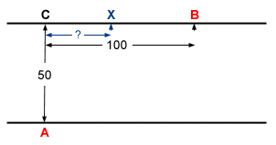

Lösung des Puzzles 5: Der optimale Ruderer
Der Punkt X ist 28.9 Meter vom Punkt C entfernt.
Für die Lösung der Aufgabe benötigt man entweder Differentialrechnung oder einen graphikfähigen Taschenrechner mit Trace-Funktion.
Man stellt die Gleichung der Zielfunktion f als Funktion der Variablen
x=CX auf {f= 3.6*√(2500 + x*x)/5 + 3.6*(100-x)/10}, setzt die Ableitungsfunktion
auf Null und bestimmt das Minimum der Funktion f.
Das exakte Resultat ergibt sich so zu x = 50 / √3.
Mit einem entsprechenden Taschenrechner bestimmt man das Minimum von f angenähert.